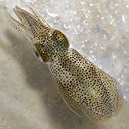
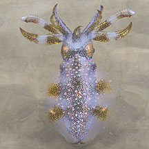
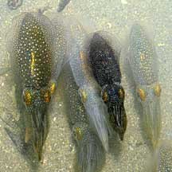
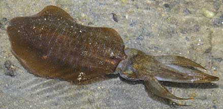
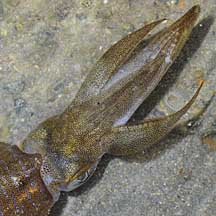
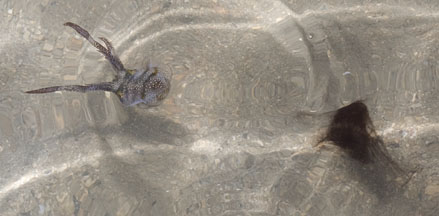
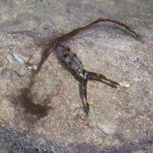

|
|
| cephalopods text index | photo index |
| Phylum Mollusca > Class Cephalopoda > squids and cuttlefishes > Family Loliginidae |
| Bigfin
reef squid Sepioteuthis lessoniana Family Loliginidae updated May 2020 Where seen? These squids are sometimes seen in numbers on our Southern shores. Among seagrasses, also near coral rubble and reefs. It is often seen with its arms held splayed out when alarmed. It typically gathers near the bottom during the day, dispersing in the water at night to hunt. Many are attracted to light. Elsewhere, it is found to 100m deep. Features: Mostly 8-12cm long, but may grow to 40cm and weigh 2kgs. Body rather squat with wide fins that extend along the entire body length, thus it is sometimes mistaken for a cuttlefish. The fins oval or somewhat pear-shaped with the widest part near the rear end of the body. Arms about half the length of the body, rather broad. It can change its colours and patterns rapidly. |
 Pulau Semakau, Sep 05 |
 Tanah Merah, Jun 12 |
 Tanah Merah, Jun 09 |
|
 This one was about 30cm long! |
 Tanah Merah, Jun 09 |
|
| What does it eat? According to FAO, it eats mainly prawns and fishes, occasionally on stomatopods and crabs and cannibalism is not very common. According to Norman, Bigfin reef squids of similar size often school together to safety from cannibalism by larger Bigfin reef squids. |
 Ink squirted out retains its shape. Sister Island, May 12 |
 Which is ink and which is squid? Tanah Merah, Jun 11 |
|
| Baby bigfins: During breeding,
males and females perform elaborate courtship displays. Females lay
lumpy sausage-like egg capsules in clusters attached to hard surfaces. Each sausage contains about 13 eggs in a row. Human uses: It is an important seafood item sold fresh or dried and harvested in a wide range of ways from trawling, nets, spears and even traps (which they enter to spawn, attracted by the clusters of eggs placed in the traps by the fishermen). |
 |
*Species are difficult to positively identify without close examination.
On this website, they are grouped by external features for convenience of display.
| Bigfin reef squids on Singapore shores |
On wildsingapore
flickr
|
| Other sightings on Singapore shores |
|
squids @ Terumbu Semakau 23Mar2011 from SgBeachBum on Vimeo. |
| Acknowledgement Grateful thanks to Tay Ywee Chieh for identifying this cuttlefish. Links
|